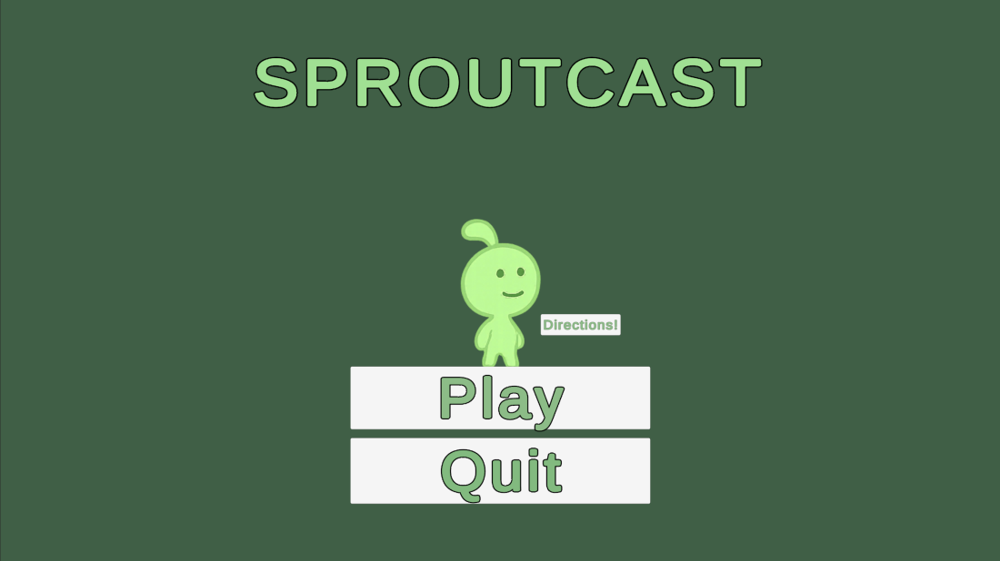
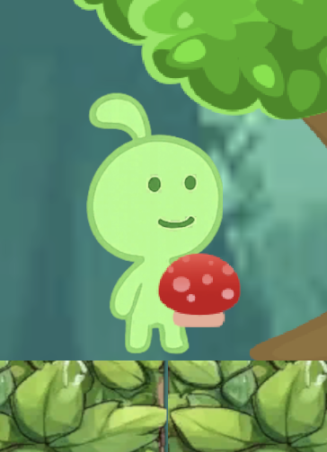
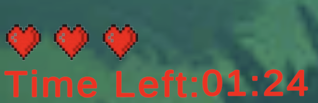
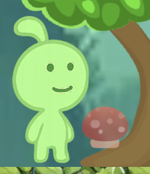

Vanessa Xu
This project aims to create a strategic 2D platformer game, where the player progresses through two biomes, the forest and snow, by strategically collecting and placing environmental resources to build paths. Each resource has unique properties: different disappearance timers once placed, different weights that affect player movement speed, and different placement characteristics depending on the biome. For example, in the forest biome, the player builds a horizontal bridge using snapping placement with the E key. In the snow biome, the player builds vertical staircases using the W key. These biome-specific mechanics create variety while reinforcing the theme of crossing changing environments. The primary goals of Sproutcast were to design interactive and strategic gameplay. By combining building, physics, and timing with platforming, the game encourages players to think critically about how they use resources, how quickly they move, and how they adapt to disappearing platforms.

The project uses techniques such as:

In order for the player to interact with each object, there had to be collision detection, which requires Collider2D and Rigidbody2D attached to each object. I attached a GroundCheck, RayPosition, and GrabPosition object to my player in order to manage specific interactions. For example, GroundCheck determines when the player is standing on a surface, enabling jumping and stable movement. RayPosition is used for raycasting to detect objects in front of the player for interactions. GrabPosition defines the location where objects are held when picked up, ensuring that the object moves with the player while carrying them.
The Movement script interacts with the GrabObject script, as GrabObject creates a component of the Movement class. The Movement class holds the logic of changing each speed based on the tagged object. Each object is given their own specific tag in the inspector which can be called and used in scripts. I use a switch statement that checks all the tags of possible pickable objects, assigning different speeds accordingly. Then, in the GrabObject script when the object is grabbed, it calls the function from the Movement class and sets the proper parameter of what the current held object is. The mushroom and ice shard are both the fastest, since they last the shortest on the bridge. Likewise, the glacier and bush are the second fastest, and the ice chunk and wood are the slowest. This helps bring in the strategic component of the game, since the goal is to build starting with the wood/ice chunk, and add the mushroom and ice shard as the last few. This way, the bridge will stay intact for longer without having to constantly rebuild.


Objects will slowly fade away on the bridge...
Objects are spawned randomly...
The spikes add an extra level of difficulty...
During development, I first...
One unique feature of the project is...